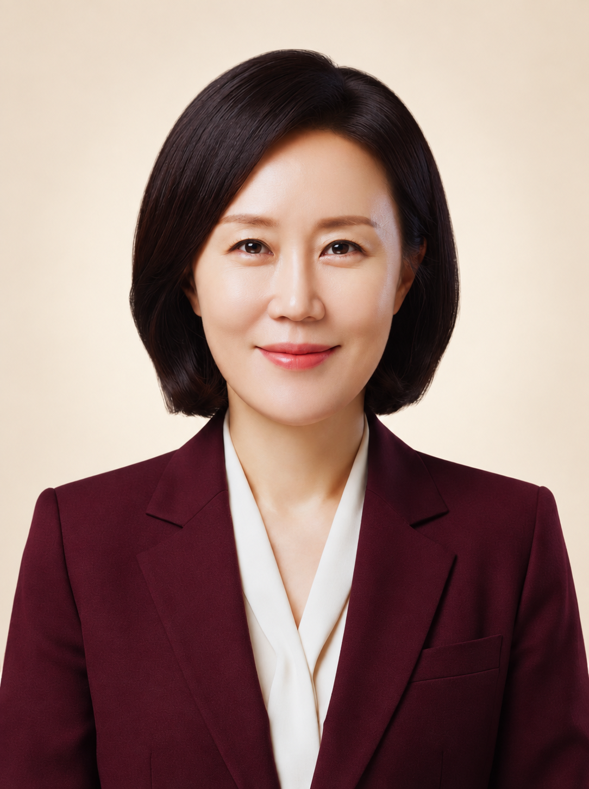

심리 · 상담
청소년상담사 1·2급 / 임상심리사 1·2급 / 상담심리사 2급 / KAC 인증코치 / RT심리상담전문가

01 / ABOUT
안녕하세요. 심리·직업상담과
AI 크리에이팅을 연결하는 김다감입니다.
내가 무엇을 잘하는지 발견하는 일부터 그 가치를 세상에 전하는 일까지 함께합니다. 오랜 상담 현장에서 쌓아온 강점 발견 노하우에 직접 만들고 출판한 경험을 더해, 배움이 나만의 결과물로 이어지는 수업을 진행합니다.
05 / EXPERTISE
상담·진로·교육·창작을 아우르는
전문 자격과 현장 경험을 갖추었습니다.
청소년상담사 1·2급 / 임상심리사 1·2급 / 상담심리사 2급 / KAC 인증코치 / RT심리상담전문가
직업상담사 1·2급 / 직업능력개발훈련교사 3급(분야 : 의료기술지원 · 청소년지도 · 직업상담서비스)
다문화사회전문가 2급 / 사회복지사 2급 / 한국어교원 2급
집단심리검사·해석, 청소년 특별교육, 또래상담 진행자 교육, 구직 역량·직장 적응 교육, AI 활용 전자책·POD 종이책 제작
작성자: 김다감 · 최종 수정일: